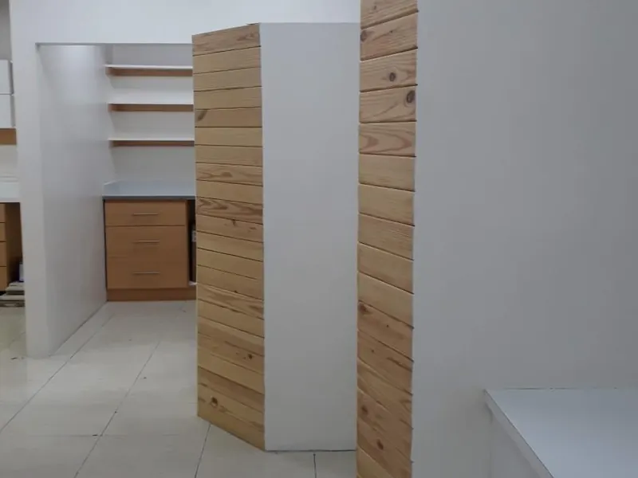
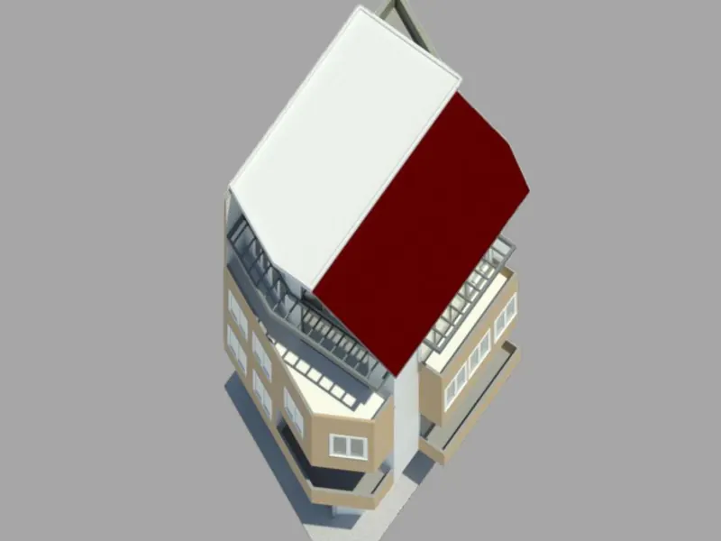
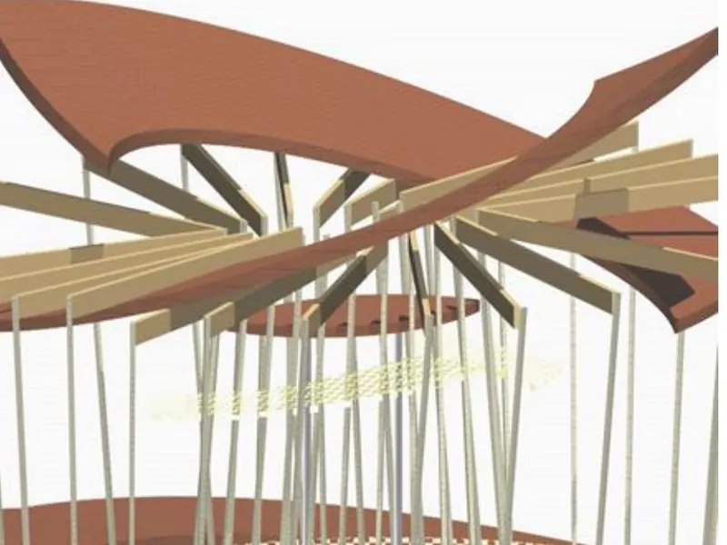
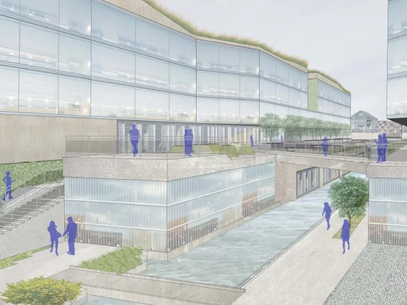
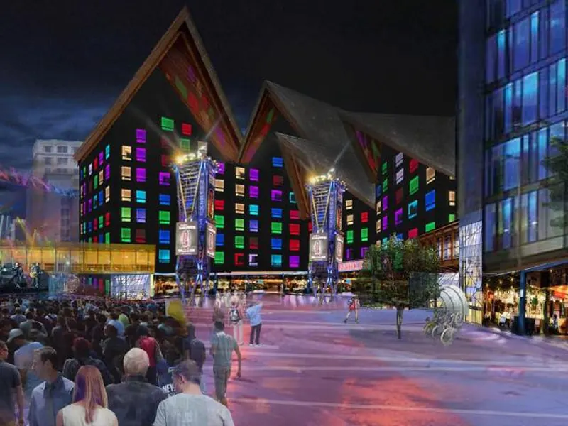

ELRICA M. METAYER
Architectural Designer + Urban Design Professional
Interior | Architecture | Urban Design
Designing places through clear thinking, spatial problem-solving, and visual communication.
About me
Designing across scales
I am an architectural designer and urban design professional connecting interiors, buildings, and neighborhoods through context-responsive design, research, and clear visual communication.
My work spans adaptive reuse, building design, and urban analysis, with a collaborative approach to turning complex needs into thoughtful, practical solutions.
- People
- Place
- Problem
- Strategy
- Design
Portfolio
Selected projects
Five projects across interiors, architecture and urban design.
-

1.0 Health / CommercialWIN Dental Clinic
Designer + Project Lead
Adaptive reuse of an existing commercial space into a modern dental clinic, reorganized to improve patient flow, comfort, and clinical efficiency while working within existing building constraints.
See pages 4 to 8 in the PDF -

2.0 Mixed-Use / DensityBOUG Building
Architectural Designer
Adaptive reuse of an existing four-story townhouse in downtown Fort-de-France into a mixed-use building combining ground-floor commercial spaces with flexible residential accommodations above.
See pages 9 to 12 in the PDF -

3.0 Commercial / Public RealmBLOSSOM Street
Architectural Designer + Design Team Member
A pedestrian commercial environment shaped by architecture, landscape, and public space, designed as part of an international design competition for MOLEWA in Ruichang, China.
See pages 13 to 18 in the PDF -

4.0 Mobility / Public RealmThe RIBBONS
Urban Designer / Researcher
An urban framework for a key entry point to Suzhou’s old city, organizing green space, circulation, public realm, and mixed-use development as a series of interconnected ribbons.
See pages 19 to 24 in the PDF -

5.0 Mixed-Use / City CenterNeighborhood PULSE
Urban Designer / Researcher
A mixed-use revitalization strategy for Downtown East Minneapolis, using public space, mobility, cultural activity, and development to strengthen connections within the city center.
See pages 25 to 31 in the PDF
Background
Skills and education
Capabilities
Spatial Design
- Concept Development
- Space Planning
- Design Development
- Material + Finish Selection
- Visualization
Project Delivery
- Project Coordination
- Documentation
- Budget Coordination
- Client Coordination
- Quality Control
Leadership + Strategy
- Team Leadership
- Research + Analysis
- Stakeholder Engagement
- Problem Solving
- Cross-Cultural Communication
Software
Education and languages
Master of Urban DesignUniversity of North Carolina at Charlotte
Bachelor of ArchitecturePontificia Universidad Católica Madre y Maestra
Languages
- English
- Spanish
- French
- Haitian Creole
Thank you!
The full portfolio covers each project in detail, from context and strategy to organization and outcome.